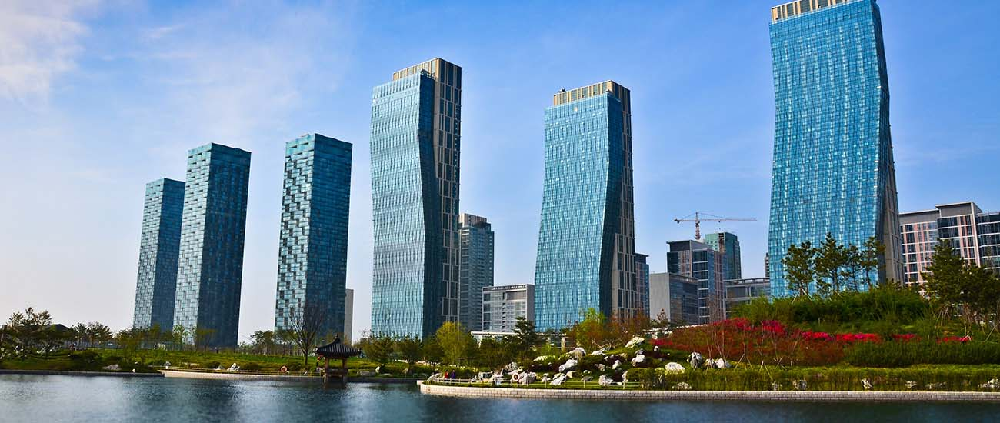

INCHEON
추천 여행지:인천광역시 송도 센트럴파크
주소:인천광역시 연수구 송도동 테크노파크로 196
활기가 넘치는 거대한 도시 송도의 물길을 따라 자리한 휴식 공간인 송도 센트럴파크에서는
카누나 자전거를 타거나 잔디밭에서 토끼와 사슴을 보며 느긋하게 시간을 보내실 수 있어요.


추천 여행지:인천광역시 송도 센트럴파크
주소:인천광역시 연수구 송도동 테크노파크로 196
활기가 넘치는 거대한 도시 송도의 물길을 따라 자리한 휴식 공간인 송도 센트럴파크에서는
카누나 자전거를 타거나 잔디밭에서 토끼와 사슴을 보며 느긋하게 시간을 보내실 수 있어요.